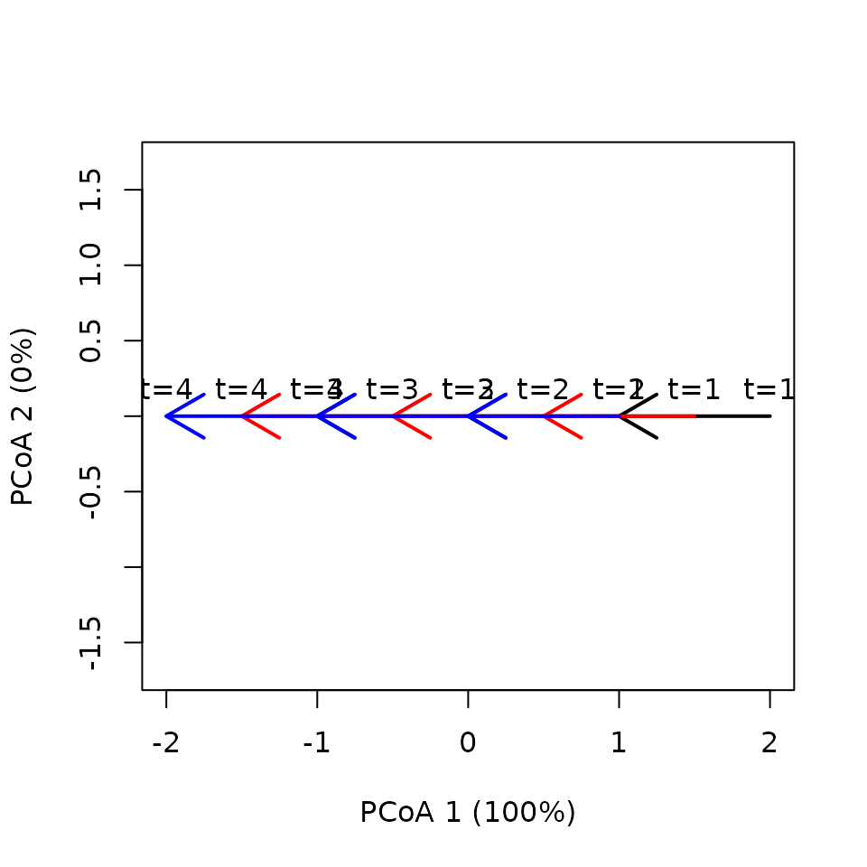
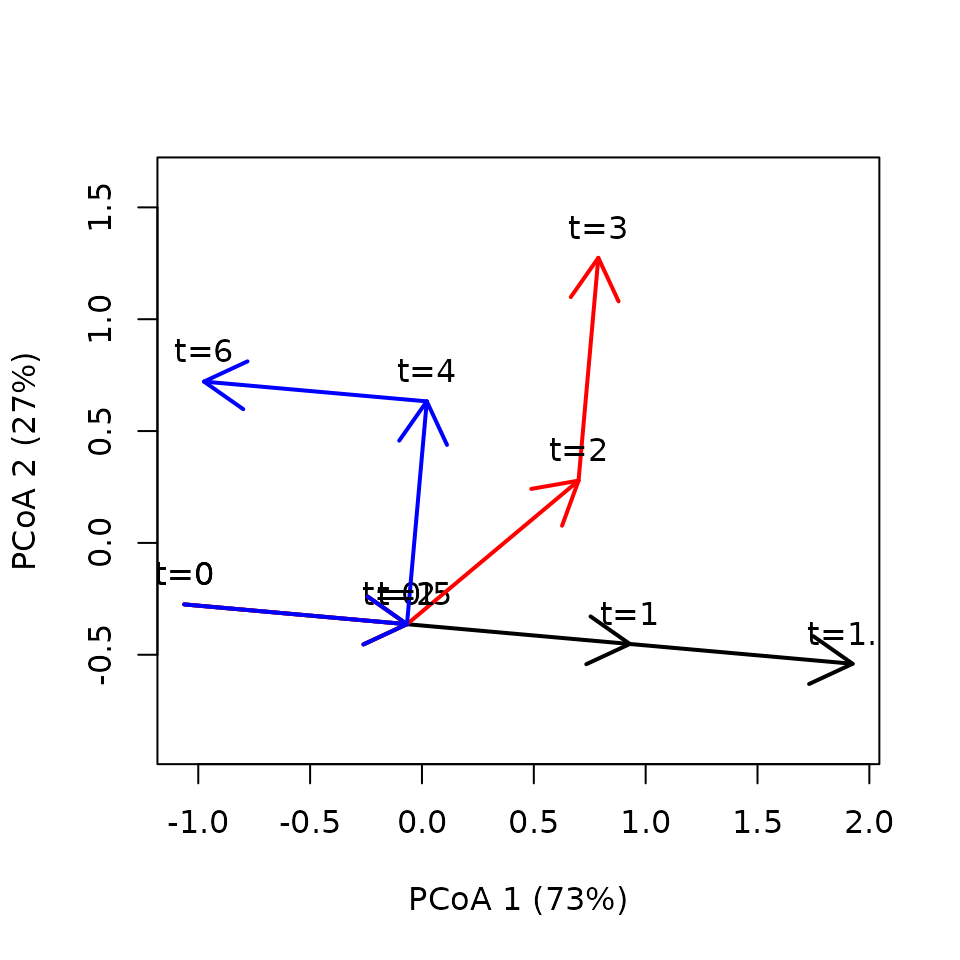

Distance metrics for trajectory resemblance
Miquel De Cáceres
2025-01-21
Source:vignettes/TrajectoryDistanceMetrics.Rmd
TrajectoryDistanceMetrics.Rmd1. Introduction
In this vignette you will learn the differences between the distance
coefficients available for assessing trajectory resemblance. We use
small datasets where trajectories occur in a space of two dimensions, so
that geometric calculations can be followed more easily. First of all,
we load ecotraj:
## Loading required package: Rcpp2. Linear trajectories
2.1 Oposed linear trajectories
sites <- c("1","1","1","1","2","2","2", "2")
times <- c(0,1,2,3,0,1,2,3)
xy<-matrix(0, nrow=8, ncol=2)
xy[2,2]<-1
xy[3,2]<-2
xy[4,2]<-3
xy[5,2]<-3
xy[6,2]<-2
xy[7,2]<-1
xy[8,2]<-0
x <- defineTrajectories(dist(xy), sites = sites, times = times)
trajectoryPCoA(x,
traj.colors = c("black", "red", "blue"), lwd = 2,
time.labels = TRUE)
## S1 S2 S3 Path
## 1 1 1 1 3
## 2 1 1 1 3## S1 S2 S3 Path
## 1 1 1 1 1
## 2 1 1 1 1## reference site survey time timeRef shift
## 1 1 2 1 0 3 3
## 2 1 2 2 1 2 1
## 3 1 2 3 2 1 -1
## 4 1 2 4 3 0 -3
## 5 2 1 1 0 3 3
## 6 2 1 2 1 2 1
## 7 2 1 3 2 1 -1
## 8 2 1 4 3 0 -3
trajectoryDistances(x, distance.type = "SPD")## 1
## 2 0
trajectoryDistances(x, distance.type = "DSPD")## 1
## 2 1
trajectoryDistances(x, distance.type = "TSD")## 1
## 2 22.2 Equal trajectories but different number of segments
sites <- c("1","1","1","1","2","2","2","3","3")
times <- c(0,1,2,3,0,1.5,3,0,3)
xy<-matrix(0, nrow=9, ncol=2)
xy[2,2]<-1
xy[3,2]<-2
xy[4,2]<-3
xy[6,2]<-1.5
xy[7,2]<-3
xy[9,2]<-3
x <- defineTrajectories(dist(xy), sites = sites, times = times)
trajectoryPCoA(x,
traj.colors = c("black", "red", "blue"), lwd = 2,
time.labels = TRUE)## S1 S2 S3 Path
## 1 1.0 1.0 1 3
## 2 1.5 1.5 NA 3
## 3 3.0 NA NA 3## S1 S2 S3 Path
## 1 1 1 1 1
## 2 1 1 NA 1
## 3 1 NA NA 1## reference site survey time timeRef shift
## 1 1 2 1 0.0 0.0 0
## 2 1 2 2 1.5 1.5 0
## 3 1 2 3 3.0 3.0 0
## 4 1 3 1 0.0 0.0 0
## 5 1 3 2 3.0 3.0 0
## 6 2 1 1 0.0 0.0 0
## 7 2 1 2 1.0 1.0 0
## 8 2 1 3 2.0 2.0 0
## 9 2 1 4 3.0 3.0 0
## 10 2 3 1 0.0 0.0 0
## 11 2 3 2 3.0 3.0 0
## 12 3 1 1 0.0 NA NA
## 13 3 1 2 1.0 NA NA
## 14 3 1 3 2.0 NA NA
## 15 3 1 4 3.0 NA NA
## 16 3 2 1 0.0 NA NA
## 17 3 2 2 1.5 1.5 0
## 18 3 2 3 3.0 NA NA
trajectoryDistances(x, distance.type = "SPD")## 1 2
## 2 0
## 3 0 0
trajectoryDistances(x, distance.type = "DSPD")## 1 2
## 2 0.5833333
## 3 1.3333333 1.5000000
trajectoryDistances(x, distance.type = "TSD")## 1 2
## 2 0
## 3 0 02.3 Equal pathways but different speeds
sites <- c("1","1","1","1","2","2","2","2","3","3","3","3")
times <- c(0,0.5,1,1.5,0,1,2,3,0,2,4,6)
xy<-matrix(0, nrow=12, ncol=2)
xy[2,2]<-1
xy[3,2]<-2
xy[4,2]<-3
xy[5:8,2] <- xy[1:4,2]
xy[9:12,2] <- xy[1:4,2]
x <- defineTrajectories(dist(xy), sites = sites, times = times)
par(mfrow=c(3,1))
trajectoryPCoA(subsetTrajectories(x,"1"),
traj.colors = c("black"), lwd = 2,
time.labels = TRUE)
trajectoryPCoA(subsetTrajectories(x,"2"),
traj.colors = c("red"), lwd = 2,
time.labels = TRUE)
trajectoryPCoA(subsetTrajectories(x,"3"),
traj.colors = c("blue"), lwd = 2,
time.labels = TRUE)
## S1 S2 S3 Path
## 1 1 1 1 3
## 2 1 1 1 3
## 3 1 1 1 3## S1 S2 S3 Path
## 1 2.0 2.0 2.0 2.0
## 2 1.0 1.0 1.0 1.0
## 3 0.5 0.5 0.5 0.5## reference site survey time timeRef shift
## 1 1 2 1 0.0 0.0 0.0
## 2 1 2 2 1.0 0.5 -0.5
## 3 1 2 3 2.0 1.0 -1.0
## 4 1 2 4 3.0 1.5 -1.5
## 5 1 3 1 0.0 0.0 0.0
## 6 1 3 2 2.0 0.5 -1.5
## 7 1 3 3 4.0 1.0 -3.0
## 8 1 3 4 6.0 1.5 -4.5
## 9 2 1 1 0.0 0.0 0.0
## 10 2 1 2 0.5 1.0 0.5
## 11 2 1 3 1.0 2.0 1.0
## 12 2 1 4 1.5 3.0 1.5
## 13 2 3 1 0.0 0.0 0.0
## 14 2 3 2 2.0 1.0 -1.0
## 15 2 3 3 4.0 2.0 -2.0
## 16 2 3 4 6.0 3.0 -3.0
## 17 3 1 1 0.0 0.0 0.0
## 18 3 1 2 0.5 2.0 1.5
## 19 3 1 3 1.0 4.0 3.0
## 20 3 1 4 1.5 6.0 4.5
## 21 3 2 1 0.0 0.0 0.0
## 22 3 2 2 1.0 2.0 1.0
## 23 3 2 3 2.0 4.0 2.0
## 24 3 2 4 3.0 6.0 3.0
trajectoryDistances(x, distance.type = "SPD")## 1 2
## 2 0
## 3 0 0
trajectoryDistances(x, distance.type = "DSPD")## 1 2
## 2 0
## 3 0 0
trajectoryDistances(x, distance.type = "TSD")## 1 2
## 2 0.6250
## 3 0.9375 0.62502.4 Space-shifted trajectories
sites <- c("1","1","1","1","2","2","2","2","3","3","3","3")
times <- c(1,2,3,4,1,2,3,4,1,2,3,4)
xy<-matrix(0, nrow=12, ncol=2)
xy[2,2]<-1
xy[3,2]<-2
xy[4,2]<-3
# States are all shifted half unit with respect to site "1"
xy[5:8,2] <- xy[1:4,2] + 0.5
# States are all shifted one unit with respect to site "1"
xy[9:12,2] <- xy[1:4,2] + 1.0
x <- defineTrajectories(dist(xy), sites = sites, times = times)
trajectoryPCoA(x,
traj.colors = c("black", "red", "blue"), lwd = 2,
time.labels = TRUE)
## S1 S2 S3 Path
## 1 1 1 1 3
## 2 1 1 1 3
## 3 1 1 1 3## S1 S2 S3 Path
## 1 1 1 1 1
## 2 1 1 1 1
## 3 1 1 1 1## reference site survey time timeRef shift
## 1 1 2 1 1 1.5 0.5
## 2 1 2 2 2 2.5 0.5
## 3 1 2 3 3 3.5 0.5
## 4 1 2 4 4 NA NA
## 5 1 3 1 1 2.0 1.0
## 6 1 3 2 2 3.0 1.0
## 7 1 3 3 3 4.0 1.0
## 8 1 3 4 4 NA NA
## 9 2 1 1 1 NA NA
## 10 2 1 2 2 1.5 -0.5
## 11 2 1 3 3 2.5 -0.5
## 12 2 1 4 4 3.5 -0.5
## 13 2 3 1 1 1.5 0.5
## 14 2 3 2 2 2.5 0.5
## 15 2 3 3 3 3.5 0.5
## 16 2 3 4 4 NA NA
## 17 3 1 1 1 NA NA
## 18 3 1 2 2 1.0 -1.0
## 19 3 1 3 3 2.0 -1.0
## 20 3 1 4 4 3.0 -1.0
## 21 3 2 1 1 NA NA
## 22 3 2 2 2 1.5 -0.5
## 23 3 2 3 3 2.5 -0.5
## 24 3 2 4 4 3.5 -0.5
trajectoryDistances(x, distance.type = "SPD")## 1 2
## 2 0.125
## 3 0.250 0.125
trajectoryDistances(x, distance.type = "DSPD")## 1 2
## 2 0.5000000
## 3 0.3333333 0.5000000
trajectoryDistances(x, distance.type = "TSD")## 1 2
## 2 0.5
## 3 1.0 0.52.5 Space-expanded trajectories
sites <- c("1","1","1","1","2","2","2","2","3","3","3","3")
times <- c(0,1,2,3,0,1,2,3,0,1,2,3)
xy<-matrix(0, nrow=12, ncol=2)
xy[2,2]<-1
xy[3,2]<-2
xy[4,2]<-3
xy[5:8,2] <- xy[1:4,2]*1.5
xy[9:12,2] <- xy[1:4,2]*2
x <- defineTrajectories(dist(xy), sites = sites, times = times)
trajectoryPCoA(x,
traj.colors = c("black", "red", "blue"), lwd = 2,
time.labels = TRUE)
## S1 S2 S3 Path
## 1 1.0 1.0 1.0 3.0
## 2 1.5 1.5 1.5 4.5
## 3 2.0 2.0 2.0 6.0## S1 S2 S3 Path
## 1 1.0 1.0 1.0 1.0
## 2 1.5 1.5 1.5 1.5
## 3 2.0 2.0 2.0 2.0## reference site survey time timeRef shift
## 1 1 2 1 0 0.0000000 0.0000000
## 2 1 2 2 1 1.5000000 0.5000000
## 3 1 2 3 2 3.0000000 1.0000000
## 4 1 2 4 3 NA NA
## 5 1 3 1 0 0.0000000 0.0000000
## 6 1 3 2 1 2.0000000 1.0000000
## 7 1 3 3 2 NA NA
## 8 1 3 4 3 NA NA
## 9 2 1 1 0 0.0000000 0.0000000
## 10 2 1 2 1 0.6666667 -0.3333333
## 11 2 1 3 2 1.3333333 -0.6666667
## 12 2 1 4 3 2.0000000 -1.0000000
## 13 2 3 1 0 0.0000000 0.0000000
## 14 2 3 2 1 1.3333333 0.3333333
## 15 2 3 3 2 2.6666667 0.6666667
## 16 2 3 4 3 NA NA
## 17 3 1 1 0 0.0000000 0.0000000
## 18 3 1 2 1 0.5000000 -0.5000000
## 19 3 1 3 2 1.0000000 -1.0000000
## 20 3 1 4 3 1.5000000 -1.5000000
## 21 3 2 1 0 0.0000000 0.0000000
## 22 3 2 2 1 0.7500000 -0.2500000
## 23 3 2 3 2 1.5000000 -0.5000000
## 24 3 2 4 3 2.2500000 -0.7500000
trajectoryDistances(x, distance.type = "SPD")## 1 2
## 2 0.1875
## 3 0.5000 0.1875
trajectoryDistances(x, distance.type = "DSPD")## 1 2
## 2 0.7500000
## 3 1.3333333 0.9166667
trajectoryDistances(x, distance.type = "TSD")## 1 2
## 2 0.75
## 3 1.50 0.753. Curved trajectories
3.1 Constant speed
sites <- c("1","1","1","1","2","2","2","2","3","3","3","3")
surveys <- c(1,2,3,4,1,2,3,4,1,2,3,4)
xy<-matrix(0, nrow=12, ncol=2)
xy[2,2]<-1
xy[3,2]<-2
xy[4,2]<-3
xy[5:6,2] <- xy[1:2,2]
xy[7,1]<-0+sqrt(0.5)
xy[7,2]<-1+sqrt(0.5)
xy[8,2]<-xy[7,2]
xy[8,1]<-xy[7,1]+1
xy[9:10,2] <- xy[1:2,2]
xy[11,1] <- 1.0
xy[11,2] <- 1.0
xy[12,1] <- 1.0
xy[12,2] <- 0.0
x <- defineTrajectories(dist(xy), sites = sites, times = times)
trajectoryPCoA(x,
traj.colors = c("black", "red", "blue"), lwd = 2,
time.labels = TRUE)## Warning in cmdscale(d, eig = TRUE, add = TRUE, k = nrow(as.matrix(d)) - : only
## 10 of the first 11 eigenvalues are > 0## S1 S2 S3 Path
## 1 1 1 1 3
## 2 1 1 1 3
## 3 1 1 1 3## S1 S2 S3 Path
## 1 1 1 1 1
## 2 1 1 1 1
## 3 1 1 1 1## reference site survey time timeRef shift
## 1 1 2 1 0 0.000000 0.0000000
## 2 1 2 2 1 1.000000 0.0000000
## 3 1 2 3 2 1.707107 -0.2928932
## 4 1 2 4 3 1.707107 -1.2928932
## 5 1 3 1 0 0.000000 0.0000000
## 6 1 3 2 1 1.000000 0.0000000
## 7 1 3 3 2 1.000000 -1.0000000
## 8 1 3 4 3 0.000000 -3.0000000
## 9 2 1 1 0 0.000000 0.0000000
## 10 2 1 2 1 1.000000 0.0000000
## 11 2 1 3 2 1.707107 -0.2928932
## 12 2 1 4 3 NA NA
## 13 2 3 1 0 0.000000 0.0000000
## 14 2 3 2 1 1.000000 0.0000000
## 15 2 3 3 2 1.707107 -0.2928932
## 16 2 3 4 3 0.000000 -3.0000000
## 17 3 1 1 0 0.000000 0.0000000
## 18 3 1 2 1 1.000000 0.0000000
## 19 3 1 3 2 1.000000 -1.0000000
## 20 3 1 4 3 1.000000 -2.0000000
## 21 3 2 1 0 0.000000 0.0000000
## 22 3 2 2 1 1.000000 0.0000000
## 23 3 2 3 2 1.707107 -0.2928932
## 24 3 2 4 3 NA NA
trajectoryDistances(x, distance.type = "SPD")## 1 2
## 2 0.5743683
## 3 0.6250000 0.4267767
trajectoryDistances(x, distance.type = "DSPD")## 1 2
## 2 0.7658244
## 3 0.9023689 0.6868867
trajectoryDistances(x, distance.type = "TSD")## 1 2
## 2 0.7267030
## 3 1.1441228 0.65328153.2 Different speed
sites <- c("1","1","1","1","2","2","2","2","3","3","3","3")
times <- c(0,0.5,1,1.5,0,1,2,3,0,2,4,6)
xy<-matrix(0, nrow=12, ncol=2)
xy[2,2]<-1
xy[3,2]<-2
xy[4,2]<-3
xy[5:6,2] <- xy[1:2,2]
xy[7,1]<-0+sqrt(0.5)
xy[7,2]<-1+sqrt(0.5)
xy[8,2]<-xy[7,2]
xy[8,1]<-xy[7,1]+1
xy[9:10,2] <- xy[1:2,2]
xy[11,1] <- 1.0
xy[11,2] <- 1.0
xy[12,1] <- 1.0
xy[12,2] <- 0.0
x <- defineTrajectories(dist(xy), sites = sites, times = times)
trajectoryPCoA(x,
traj.colors = c("black", "red", "blue"), lwd = 2,
time.labels = TRUE)## Warning in cmdscale(d, eig = TRUE, add = TRUE, k = nrow(as.matrix(d)) - : only
## 10 of the first 11 eigenvalues are > 0
## S1 S2 S3 Path
## 1 1 1 1 3
## 2 1 1 1 3
## 3 1 1 1 3## S1 S2 S3 Path
## 1 2.0 2.0 2.0 2.0
## 2 1.0 1.0 1.0 1.0
## 3 0.5 0.5 0.5 0.5## reference site survey time timeRef shift
## 1 1 2 1 0.0 0.0000000 0.0000000
## 2 1 2 2 1.0 0.5000000 -0.5000000
## 3 1 2 3 2.0 0.8535534 -1.1464466
## 4 1 2 4 3.0 0.8535534 -2.1464466
## 5 1 3 1 0.0 0.0000000 0.0000000
## 6 1 3 2 2.0 0.5000000 -1.5000000
## 7 1 3 3 4.0 0.5000000 -3.5000000
## 8 1 3 4 6.0 0.0000000 -6.0000000
## 9 2 1 1 0.0 0.0000000 0.0000000
## 10 2 1 2 0.5 1.0000000 0.5000000
## 11 2 1 3 1.0 1.7071068 0.7071068
## 12 2 1 4 1.5 NA NA
## 13 2 3 1 0.0 0.0000000 0.0000000
## 14 2 3 2 2.0 1.0000000 -1.0000000
## 15 2 3 3 4.0 1.7071068 -2.2928932
## 16 2 3 4 6.0 0.0000000 -6.0000000
## 17 3 1 1 0.0 0.0000000 0.0000000
## 18 3 1 2 0.5 2.0000000 1.5000000
## 19 3 1 3 1.0 2.0000000 1.0000000
## 20 3 1 4 1.5 2.0000000 0.5000000
## 21 3 2 1 0.0 0.0000000 0.0000000
## 22 3 2 2 1.0 2.0000000 1.0000000
## 23 3 2 3 2.0 3.4142136 1.4142136
## 24 3 2 4 3.0 NA NA
trajectoryDistances(x, distance.type = "SPD")## 1 2
## 2 0.5743683
## 3 0.6250000 0.4267767
trajectoryDistances(x, distance.type = "DSPD")## 1 2
## 2 0.7658244
## 3 0.9023689 0.6868867
trajectoryDistances(x, distance.type = "TSD")## 1 2
## 2 0.9748813
## 3 1.4872932 0.8433407